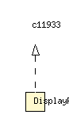

net.chrissearle.flickrvote.web.model
Class DisplayPhotographer

java.lang.Object
 net.chrissearle.flickrvote.web.model.DisplayPhotographer
net.chrissearle.flickrvote.web.model.DisplayPhotographer
- All Implemented Interfaces:
- Photographer
public class DisplayPhotographer
- extends Object
- implements Photographer
| Methods inherited from class java.lang.Object |
clone, equals, finalize, getClass, hashCode, notify, notifyAll, toString, wait, wait, wait |
DisplayPhotographer
public DisplayPhotographer(PhotographerItem photographer)
isActive
public Boolean isActive()
- Specified by:
isActive in interface Photographer
isAdmin
public Boolean isAdmin()
- Specified by:
isAdmin in interface Photographer
getFullname
public String getFullname()
- Specified by:
getFullname in interface Photographer
getIconUrl
public String getIconUrl()
- Specified by:
getIconUrl in interface Photographer
getPhotographerId
public String getPhotographerId()
- Specified by:
getPhotographerId in interface Photographer
getTwitterAccount
public String getTwitterAccount()
- Specified by:
getTwitterAccount in interface Photographer
getUsername
public String getUsername()
- Specified by:
getUsername in interface Photographer
getPhotographerName
public String getPhotographerName()
- Specified by:
getPhotographerName in interface Photographer